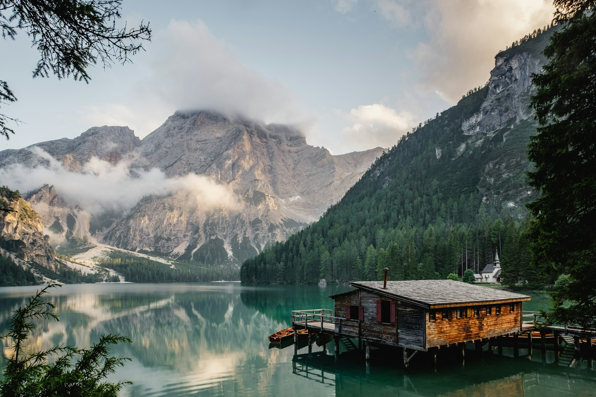

ORIGINAL HOSPITALITY CONCEPT / TECH BUZZSSomewhere
Somewhere
to slow down.
A quiet retreat. A softer pace.
A little room to come back to yourself.
A fictional retreat, inspired by time spent outdoors.
Days without a rush.
Mornings without an agenda.
Start with a slow cup of coffee. Follow the lakeside path. Read another chapter. Stillwater is a concept for a place where the smallest moments get your full attention.
01 / Walk by the water02 / A table for two03 / An unhurried evening
A FEW DAYS, JUST FOR YOUPlan a softer
Plan a softer
kind of stay.
Explore the booking interaction.
This concept does not take real reservations.